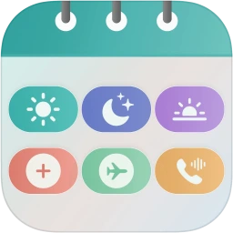
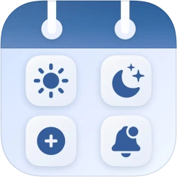

My Nurse Shift Planner
Shift calendar and pay tracker for nurses, healthcare staff, and rotating hospital schedules.
Discount code inside
Choose the shift planner that fits your role,
your schedule & the way you work.

Shift calendar and pay tracker for nurses, healthcare staff, and rotating hospital schedules.
Discount code inside

Shift calendar and pay tracker for broader work schedules, workplaces, and rotating shifts.
Discount code inside
Discover more practical mobile apps from our team across
productivity, wellness, finance and everyday tools.
My Shift Planner offers two focused iPhone and iPad apps: one designed around nursing schedules and one built for broader shift work. Both help you organize changing workdays without turning your personal planner into an employer scheduling system.
Add individual shifts, plan several dates together, apply rotation patterns and review upcoming work from a calendar designed for irregular schedules.
Track planned hours, overtime, differentials, bonuses and estimated gross pay across multiple work profiles before payday arrives.
Your planner starts with data stored on your device. Optional iCloud sync can keep shifts, profiles and settings available across your Apple devices.
The core planning experience is familiar in both apps, while shift labels, rotation examples and workplace terminology are adapted to different kinds of work.
Designed for nurses and healthcare staff managing day and night shifts, on-call work, callbacks, overtime, PTO, education days and multiple units or workplaces.
Built for employees, contractors and shift workers across retail, hospitality, logistics, manufacturing, public services and other changing workplaces.
Use the free guides and tools to compare common rotations, estimate shift pay and organize work that crosses midnight or spans several workplaces.
Understand fixed schedules, 2-2-3 patterns, 4-on/4-off rotations and the tradeoffs between rotating days and nights.
Compare patterns Free calculatorCombine regular hours, overtime, night and weekend differentials, and bonuses in a simple browser-based estimate.
Open calculator Planning checklistRecord cross-midnight work correctly, review consecutive nights and keep reminders, locations and pay details together.
Read the checklistNo. Both apps are private personal planners for recording and reviewing your own schedule. Always confirm work times and payroll information with your employer's official systems.
Yes. You can create multiple work profiles and keep workplace, role, pay settings and assigned shifts organized inside one planner.
No. Pay figures are planning estimates based on the rates and rules you enter. Taxes, employer policies, local labor rules and payroll rounding can change the final amount.
Data is stored locally first. If you enable iCloud sync, selected planner data can sync through Apple's iCloud services associated with your Apple account.
Both planners support CSV and PDF reports. Exported files can be shared or saved using the options available on your device.
The apps are designed for supported iPhone and iPad versions. Home screen and lock screen widget availability depends on the device and iOS or iPadOS version.